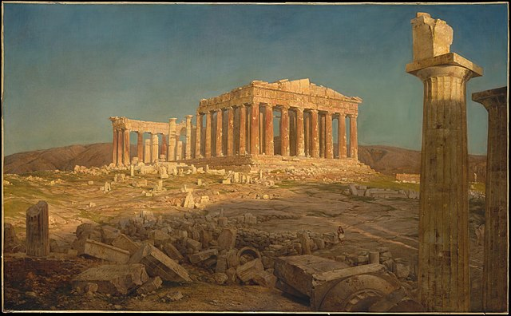
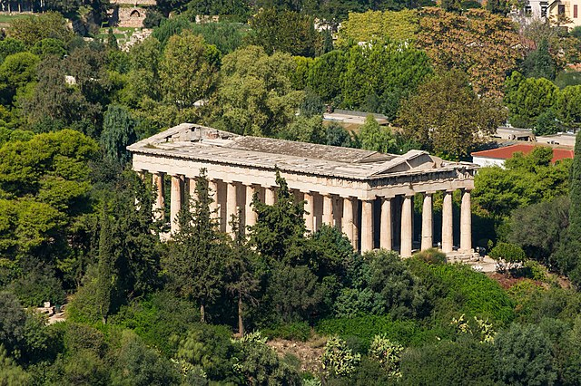

Explore key events that shaped the world we live in today.
Ancient Greece was a civilization known for its rich contributions to philosophy, science, art, and politics, laying the foundations for Western culture.
The Parthenon is a temple dedicated to the goddess Athena, located on the Acropolis of Athens, symbolizing the glory of ancient Greece.
The Acropolis is an ancient citadel in Athens, home to several iconic structures, including the Parthenon and the Temple of Athena Nike.
